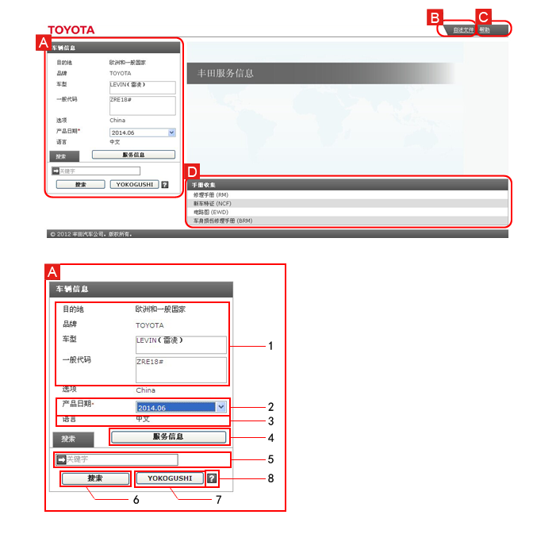
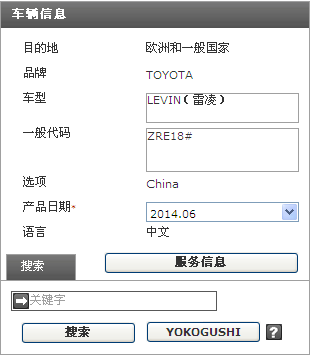

首页可用于在已收集的服务信息中选择适合的产品日期以及显示相关手册。
使用关键字搜索相关信息非常简单。

| A | 车辆信息 在显示的手册中填写适合的产品日期。 |
|
|---|---|---|
| 1 | 显示目的地、品牌、车型、一般代码。 | |
| 2 | 产品日期选择栏 根据车辆的生产日期选择手册日期中适合的产品日期。 |
|
| 3 | 语言 显示英语。 |
|
| 4 | 服务信息 填写适合的产品日期后显示相应的手册。 |
|
| 5 | 关键字输入栏 输入关键字。 |
|
| 6 | 搜索 搜索适合的产品日期，然后搜索与关键字相关的手册。 |
|
| 7 | YOKOGUSHI 从填写的车辆信息对应的所有维修手册、新车特征和电路图中，搜索包含诊断代码相关信息的手册。 |
|
| 8 | YOKOGUSHI 帮助 显示 YOKOGUSHI 说明。 |
|
| B | 使用须知 本部分提供警告、注意等使用本网站的信息。 |
|
| C | 帮助 显示本网站的使用说明和功能。 |
|
| D | 手册收集 显示收录在本光盘上的手册。 |
|
根据车辆的生产日期填写手册中适合的产品日期。
